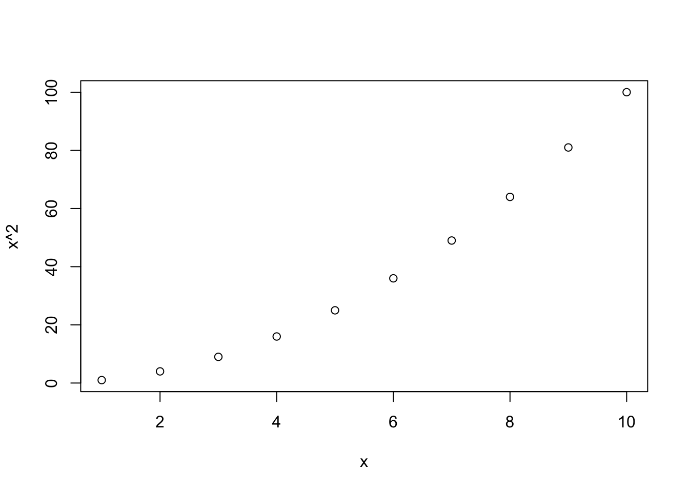

R functions can be called in many different ways. In this tutorial, the logic of argument processing is described.
All arguments defined in R functions have names, which can be seen in the function help (check this for the examples to follow). They are called formal arguments, to distinguish them from the input arguments, which are used in a function call.
When calling a function, it is optional to provide the name of a formal argument. For example, function sqrt (square root) has one formal argument, x, and the following calls are both valid:
## [1] 2## [1] 2If unnamed arguments are provided as inputs to a function with several formal arguments, these are matched by position:
## [1] 2.3 2.3 2.3 2.3In contrast, named arguments provided to a function with several formal arguments are matched by name:
## [1] 2.3 2.3 2.3 2.3## [1] 2.3 2.3 2.3 2.3Named and unnamed input arguments can be mixed. In this case, a two-step processing is done:
Let’s consider the above example again:
## [1] 2.3 2.3 2.3 2.3This function call syntax is extremely flexible, but it can also be quite confusing (also for yourself!). The advantage of using unnamed input arguments is that the function call becomes more concise. However, it is generally recommended to use only a very limited number of unnamed input arguments, and to only use these for the first arguments. Moreover, it is recommended to always provide all input arguments in the order of the formal arguments. Some people even recommend using named input arguments exclusively.
Most R functions define default values for some of their (formal) arguments. As an extreme example, function read.table has 25 formal arguments, but only one of them is mandatory (the file from which to read) – all the others specify settings on how to read the information in file.
The logic of argument matching described above is done independently of whether a default is defined for a formal argument. However, for the formal arguments with default values, it is optional to provide them as input arguments.
For example, function log has two formal arguments, x and base. Argument x is mandatory, but base has the default exp(1) (natural logarithm).
## [1] 2.079442## [1] 2.079442## [1] 3...There is a special formal argument called .... This argument can match any number of input arguments that are not matched by other formal arguments.
For example, function c has a ... argument, and hence, it can accept any number of inputs:
## [1] 1## [1] 1 2 3## [1] 234 553Argument ... can match both named and unnamed inputs. For example, c uses named arguments to create a named vector.
Care must be taken to avoid matching another formal argument accidentally. For example, function data.frame has a ... argument. Now imagine you want to create a data frame with two columns row.names and column.names:
## column.names
## A a
## B b
## C cThe result is not as desired because row.names is a formal argument of function data.frame.
If you know another programming language, you will most likely be surprised by a feature called non-standard evaluation: R functions can access not only the values of the input arguments passed to them, but also the commands that resulted in these values.
For example, the axis labels in the following plot are produced by non-standard evaluation:

However, non-standard evaluation can do much more than just creating labels. For example, the subset function (see tutorial “Manipulating data frames” for more details) uses non-standard evaluation to evaluate the input argument in a different context. The following call to subset evaluates x and y not as a variable in the workspace, but as a column in the first argument, df:
## x y
## 1 1 4
## 2 2 5
## 3 3 6## x y
## 2 2 5Therefore, the above call actually means
Non-standard evaluation yourself can become quite complicated and a detailed description is well beyond the scope of this tutorial, but it is important to be aware that such as feature exists.